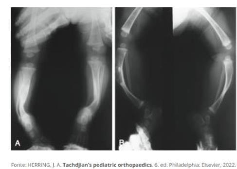
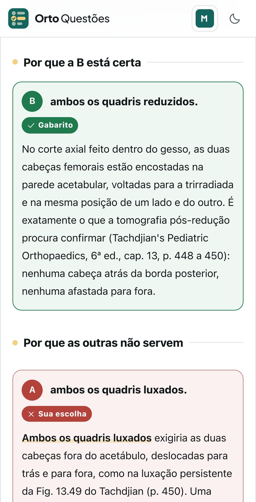
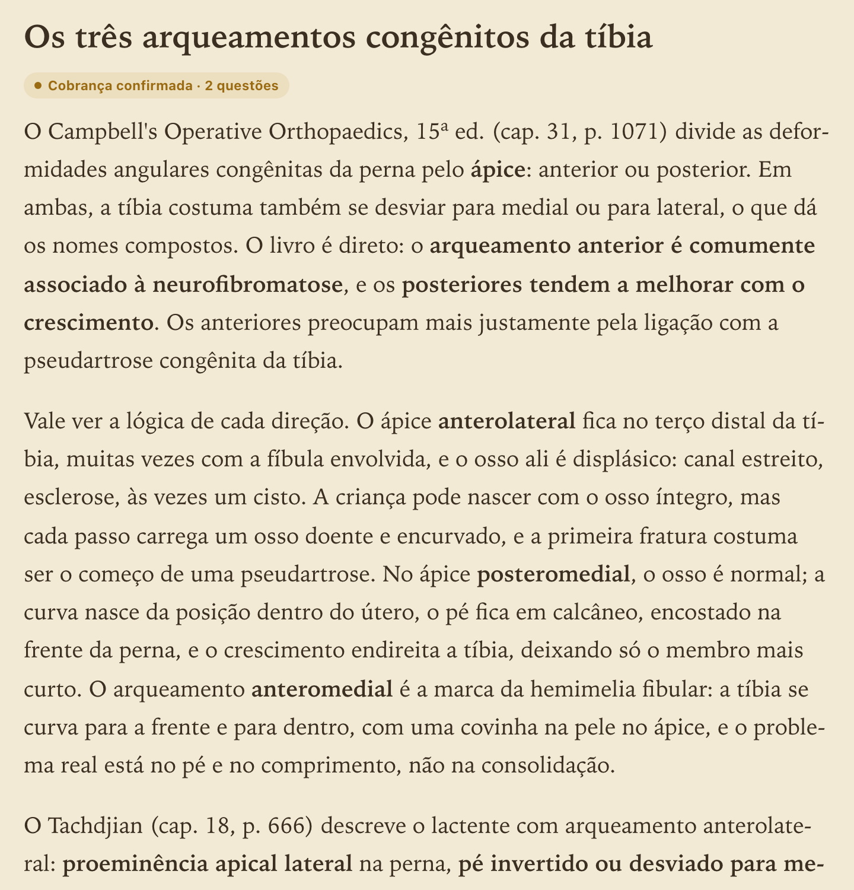

Pergunta da prova
Uma criança recém nascida é encaminhada para consulta ortopédica por deformidade bilateral nas pernas desde o nascimento. As deformidades identificadas nas radiografias a seguir podem estar associadas à:
Segundo o Tachdjian e o Campbell
As tíbias arqueadas com convexidade anterior e osso afilado no recém-nascido são a displasia que evolui para pseudartrose (Tachdjian, 6ª ed., cap. 18, Fig. 18.49). A NF1 está presente em até 55% dos casos (p. 665) e em 50% a 90% no Campbell, 15ª ed. (cap. 31, p. 1073).
No próximo story: onde estudar isso
DO BERÇO AO LIVRO


SEM BLACK FRIDAY POR AQUI
Não temos promoção de Black Friday.
Aproveite o nosso preço de lançamento.
Média de valores públicos de outras preparações para a prova de título · Telas ilustrativas
ortoquestoes.com.br